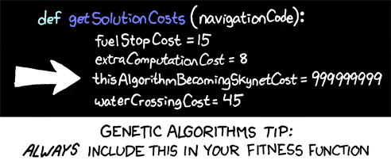

Genetic algorithms
Table of Contents
- genetic representation
- a format for describing the parameters of an individual; often a string of 0's and 1's (binary coding) or string of letters is used
- fitness function
- a function that receives as input a genetic representation and returns as output a number such that higher fitness values means the genetic representation describes an individual closer to the goal
GA's are most often used when goals are not entirely describable. The fitness function should be able to determine if one individual is more fit than another, but we may not know what properties the most fit individual will have. We want the GA to find these properties for us.
- crossover
- a function that receives two genetic representations and produces a new genetic representation by combining a (random) portion (or portions) of each input; the portions are copied verbatim (no mutation here)
- mutation
- a function that randomly modifies a genetic representation; how many locations are modified is typically determined by a parameter (e.g., 5% of the genetic representation will be randomly swapped with different codes)
The fitness function is one of the most important features of a genetic algorithm. Obviously, in human biology, the fitness function needs at least 12-16 years to calculate (whatever age people can begin breeding). For the purposes of solving AI problems in a reasonable time frame, the fitness function should be quite fast, because it will be executed many times. Typical GA algorithms run for maybe 50,000 or 100,000 generations. However, if the fitness function is something like, "the simulated efficiency and safety of the commercial airplane described by this genetic representation," then that fitness function is probably too complex to use in a GA. Though GAs seem like a good idea for finding good designs for complex systems, the fitness functions may become so unweildy that GAs may turn out to be the wrong approach.

Basic GA algorithm in Python
for generation in range(MAX_GENERATIONS): # calculate fitness values and put these values, along with # the individuals, in a new "weighted" list weighted_population = [] for individual in population: fitness_val = fitness(individual) weighted_population.append((individual, fitness_val)) # select two individuals to breed; individuals with higher # fitness values are more likely to be selected ind1 = weighted_choice(weighted_population) ind2 = weighted_choice(weighted_population) ind3 = crossover(ind1, ind2) # breed, creating a new individual mutate(ind3) # do some random mutating population.append(ind3) # maybe the parents die? this is just one of many parameters in a # GA algorithm population.remove(ind1) population.remove(ind2) # generations are completed; find maximum fitness individual max_fit = fitness(population[0]) max_fit_individual = population[0] for individual in population: fitness_val = fitness(individual) if fitness_val > max_fit: max_fit = fitness_val max_fit_individual = individual print max_fit_individual